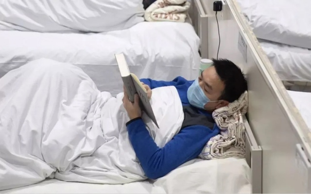
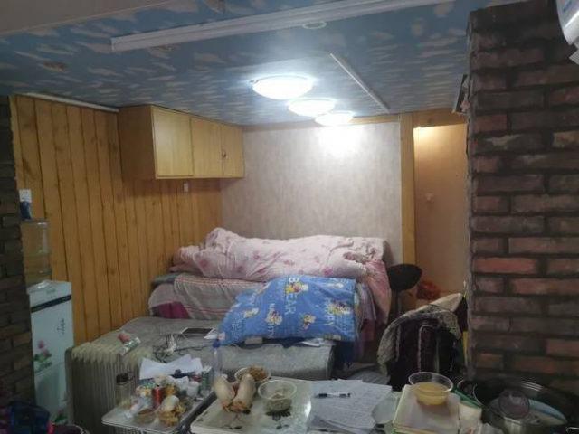
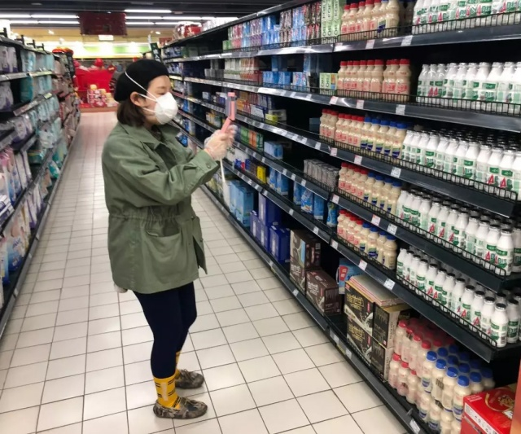

300秒回顾武汉战疫，数读封城后的武汉之变
原文链接 备份链接 经历了“封城”一个月的武汉，到底怎么样了? 全文2100字，阅读约需4分钟 点击下图进入阅读新京报特别策划 *数据新闻编辑 **陈华罗、李媛 新媒体设计 高俊夫、李亚珍 校对 何燕* ▲300秒回顾武汉战疫：宏大数 …
![]() 7271
7271
来源：正和岛
作者：叶青
03-01

1、武汉疑似病例降到393例
29日，农历二月初七。阴天。29日，全国新增确诊病例573例，新增死亡病例35例（湖北34例，河南1例），新增疑似病例132例。当日新增治愈出院病例2623例，解除医学观察的密切接触者8620人，重症病例减少299例。截至29日，全国现有确诊病例35329例（其中重症病例7365例），累计治愈出院病例41625例，累计死亡病例2870例，累计报告确诊病例79824例，现有疑似病例851例。累计追踪到密切接触者660716人，尚在医学观察的密切接触者51856人。湖北新增确诊病例570例（武汉565例，28日420例，27日313例），新增治愈出院病例2292例（武汉1675例）。武汉继续在高位。但是比起以前成千上万好多了。新增疑似病例64例（武汉50例），现有疑似病例646例（武汉393例，28日788例，27日1488例）。武汉大幅度降低。迈向清零的目标。新增死亡病例34例（武汉26例，28日37例，27日28例）。在37-19之间徘徊。现有确诊病例32959例（武汉27700例），其中重症病例7107例（武汉6393例）。累计治愈出院病例31187例（武汉19227例），累计死亡病例2761例（武汉2195例），累计确诊病例66907例（武汉49122例）。
2、受伤的PMI
自2月26日以来，全国广大共产党员踊跃捐款，表达对新冠肺炎疫情防控工作的支持。截至2月29日，全国已有1037万多名党员自愿捐款，共捐款11.8亿元。捐款活动还在进行中。我们单位周五也开始捐款。香港特区政府28日表示，香港特区行政长官和所有政治任命官员(包括各司局长、行政长官办公室主任、各副局长及政治助理)会将一个月的薪酬全数捐予香港公益金作慈善用途。各行政会议非官守议员亦一致同意会将一个月酬金捐予慈善团体。截至2月26日24时，中国慈善联合会统计全国用于此次疫情防控工作的慈善捐赠共计约257亿元。其中，大额(单笔10万元以上)捐赠2237笔，共计约241亿元。多个互联网平台共上线了约400个募捐项目，吸引3000多万人次捐赠，筹集资金约16亿元。当然，最重要的是人——医护人员。到29日，全国援鄂医护人员已达4.2万人，其中护士2.86万，占医疗队总数的68%，在医疗救治过程中发挥了非常重要的作用。29日，国家统计局服务业调查中心、中国物流与采购联合会发布，2月份，受疫情影响，中国制造业采购经理指数（PMI）为35.7%，比上月下降14.3个百分点。从企业规模看，大、中、小型企业PMI分别为36.3%、35.5%和34.1%，比上月下降14.1、14.6和14.5个百分点。从分类指数看，构成制造业PMI的5个分类指数均位于临界点之下。

2月份的非制造业商务活动指数为29.6%，比上月下降24.5个百分点。这么低的数字，一方面受部分春节假期效应影响，另一方面主要还是来自疫情对实体经济的冲击。2月19日，新浪财经结合高频数据和对经济形势的判断，发布了《2020年经济预测调整》报告，认为本轮疫情对一季度冲击较大，但全年影响有限，从目前疫情的发展态势和复工的进程来看，基本与当时的判断一致。28日累计治愈出院人数已经超过现存确诊病例人数，疫情得到初步控制。随着近期出台的减税降费、金融服务、租金减免、稳定就业等一系列政策措施的落实，将有效纾解目前生产经营环节中存在的困难，结合最近发电耗煤、复工率调研等数据来看，企业复工复产在有序推进，预计3月份PMI数据将有明显改善。
3、全国防控一盘棋
国务院联防联控机制印发《关于进一步落实分区分级差异化防控策略的通知》。全国分为四大块采取不同的对策： 湖北省和武汉市要全面加强疫情防控，继续实施“严格管控、外防输出、内防扩散”策略； 北京市要按照“外防输入、内防扩散”策略； 湖北省周边省份及浙江省、广东省、黑龙江省等重点省份要按照“外防输入、内防扩散和局部暴发、分类指导”策略； 全国其他地区要以县域为单位，实施“预防为主、外防输入、内防局部扩散”策略。 全国复工的情况怎么样？“天眼”说了算。 工业生产的恢复，也包括社会运行、生活节奏的“复苏”，使遥感卫星的“热值”观测数据快速上升。


全国复工率最高的还是在沿海。安徽也算一个。一篇文章中说：安徽终于从长三角的“打工仔”变成了“合伙人”。真让湖北人羡慕。

湖北省人社厅的数字显示：针对疫情影响我省实施稳岗返还，截至目前，首批稳岗返还已审核企业10.35万家，返还金额5.53亿元。湖北各地复工复产也采取了有效的举措。比如，离武汉最近的咸宁市高新区2月13日成立复工组，组织60名党员干部和志愿者，下沉到210余家规模企业，分片包保、“一对一”服务企业复工复产，在报批审核、交通出行和物流运输、员工生活物资保障等方面，提供一条龙全方位服务。高新区还派出驻厂干部，颁发《驻厂干部工作职责》，安排干部吃住在厂区，帮助企业抓实防控细节，向企业发放复工疫情防控手册、企业体温异常员工送诊操作指南等资料。目前，高新区已批复11家企业复工。要复业复工的话，武汉最缺的还是快递小哥。武汉市外卖员、快递员缺口2000人，电商平台缺口4000人，商超打包员等岗位也劳动力紧缺。武汉市采取了五种措施：一是面向社会公开招募了一批社区志愿者和商超志愿者。二是全市的商超门店企业不对个人进行售卖，只接受社区的团购和配送。三是在有条件的地方帮助企业安排外卖、快递小哥集中食宿。四是通过第三方购买的方式，利用在汉的、还没有复工的企业富余劳动力，通过加强健康体检和卫生防护前提下，签订了短期服务方式合同。五是优先安排商贸流通行业这些急需返岗的员工尽快返岗。目前武汉收集了61家商贸物流企业、9500余名员工的返岗信息。
4、清流哥看的书成为畅销书
武汉建火神山、雷神山医院，有17年前北京小汤山医院的经验。
方舱医院过去只有军队才用，这次怎么会用于武汉，并救了这么多人？这个聪明人就是王辰院士。

2月1日，王辰从北京匆匆赶赴武汉，看到超负荷运转的医院，辗转一夜，他首次提出建立“方舱医院”，对患者要应收尽收。话音落地，48小时后首批3座方舱医院开舱！4000多张床位，就是隔离在家、孤立无援的患者生命的绿色通道。半个多月过去，随着更多方舱医院加入，武汉定点医院终于不再“一床难求”，甚至还完成了“床等人”的逆袭。我在1月25日提了建议《征用学校宾馆作为新型肺炎治疗中心》，是源自一个网民给我留言：更快把空的学校宾馆拿出来用，要不然就来不及了……感谢这位网友。
前不久，在武汉国际会展中心的“方舱医院”，一位年轻人躺着病床上专心看书的照片走红，网友称他为：“清流哥”。

“清流哥”姓付，今年39岁，老家在孝感市汉川，后随父母在武汉生活。他从武大博士毕业后去美国深造，并攻读博士后，目前在佛罗里达州立大学教书，研究方向是高分辨冷冻电镜。他可能没想到，自己的一张照片也掀起全民读书热潮。他当时阅读的《政治秩序的起源：从前人类时代到法国大革命》，也在网上成为畅销书。这本书的作者、当代最重要的政治思想家之一的弗朗西斯·福山，也通过网络知道了这件事后，在推特上转发了这条新闻，“清流哥”的事情，就这样飘洋过海地传开了。“清流哥”经过20多天治疗已痊愈，28日出舱转入隔离点，继续观察14天。他还承诺会照顾一同出院的一位15岁小病友。值得全国人民了解的还有这个15岁的小病友。43岁的李甜一家4口都“中招”，感染了新冠肺炎，母亲没能熬过去。之后，李甜和儿子、父亲相继都住进了江汉方舱医院。为了让自己从母亲去世的巨大痛苦中走出，李甜让自己忙起来，便做起了“江汉管家”——方舱医院志愿者。期间，一家人还认识了“清流哥”，结下深厚的友谊。最近，15岁的儿子病情好转，马上就能出院。但李甜着急，自己是单亲妈妈，她和71岁的父亲还不能出院。儿子出去后，谁来照顾呢？没想到，“清流哥”说：“我和你儿子一起出院，你放心，出院后，我照顾他。”武汉学院会计专业大三学生郭岳，寒假期间从武汉回河北沧州老家后确诊新冠肺炎，但最终未感染一人。2月7日，郭岳出院后开始了车库独居生活。“我担心自己病情会出现反复，回家后马上把自己再次隔离起来，避免传染给他人。”郭岳说。车库约30平方米，一边是居室，摆放着一张小床，还有一张可供学习、吃饭的桌子，一个小电暖器；另一边是洗手间。在小小的车库里，郭岳开始了自己的学习，一边上网课一边复习备战考研。

读书与抗击新冠肺炎，就这样被密切地联系起来。刘润在《疫情之下，不要把扶你的人，当成推倒你的人》中说：唯一能救今天的自己的，是未来的自己。确实，今天你努力读书，是为了未来完美的自己。正和岛研究院执行院长施星辉在《这次疫情，暴露了一批高人》中说：企业家如何应对变局？第一，我们要先定下心来。找一个安静的地方，用半小时，或者20分钟静坐，身体要坐直，然后闭上眼睛，让自己的心，杂乱的思绪慢慢的平静下来。就像我们从黄河里舀上一瓢水放到玻璃杯子里面，一开始水是浑浊的，5分钟、10分钟以后，泥沙就会慢慢沉淀下来，最后杯子上面是清水，底下是泥沙。第二，读书。当你静下来之后，再去读书就更容易读得进去。讲的很有道理。我也借机推销“三看三听叶氏读书法”：三看：看纸质书、电纸书、财经早餐微信公众号。三听：（懒人）听书、每天一本书、开车听央广新闻。在方舱医院之外，市民开启了“直播团购”。大概是全国首次。什么都是逼出来的。26日下午，一名有直播经验的某小区业主小赵，为邻居们进行了一场100分钟的特殊直播。在开播前，她收到了一份大类清单，母婴用品、洗护、调味品、主食粮油……

到了一个大类，要看邻居们留言互动最高的商品，超市小伙伴推荐库存多性价比口碑高商品，同时要现场为商品编号，拍照记住价格，防止团购商品混淆。小赵说，直播团购远比想象中复杂，商品选好了，因为是个性订单，配货、叫号、反复核对包裹内容……超市、物业、热心业主都付出了巨大的努力。此外，小区实行封闭管理以来，早餐成为了便利店“团购”的主力。我们小区怎么没有？当然，宜昌的做法也值得借鉴。29日开始，宜昌向城区居民免费发放一批时令蔬菜，每户一袋（10公斤），一周内将向所有居民户免费供应1次。
5、首次风险报告
29日，湖北首次发布《湖北省县（市、区）新冠肺炎疫情风险等级评估报告》，按低风险、中风险、高风险三个等级对所有103个县（市、区）进行等级评估。 无确诊病例或连续14天无新增确诊病例为低风险地区； 14天内有新增确诊病例，累计确诊病例不超过50例，或累计确诊病例超过50例，14天内未发生聚集性疫情为中风险地区； 累计病例超过50例，14天内有聚集性疫情发生为高风险地区。 这与企业复工有直接的关系。 澳门特区政府13日公布，将推出一系列经济援助措施，其中有一条就是直接发钱：向澳门居民每人发放面值为3000澳门元的电子消费券，该券实际上等同于现金，可用于澳门所有餐饮行业、零售以及百货购物。 香港教育局2月20日公布，即将成立的“防疫抗疫基金”将拨出约9亿港元，向中小学和幼稚园以及其学生提供额外津贴，把每名学生津贴由2500元增加至3500元，以协助减轻学校及家长在抗疫及停课期间额外支出的负担，该举措惠及90万名学生家长。 这些做法，也值得武汉借鉴。 29日，武汉为全市困难群众增发春节慰问金，对城乡低保对象分别按照500元、300元的标准增发一次生活物资救助。 还有一个好消息是，29日起，武汉地区用户可通过小米电视、小米盒子、小米手机APP“小米视频”开通的《武汉加油》频道，免费观看20000余部影视剧内容。
6、16秒中招：一堂生动的课
前不久，有买菜中招的：宁波市江北区一患者，因出门买菜未戴口罩被感染，且接触时间仅15秒。 有买药中招的：杭州徐某某从某医馆的药房门口处进入医馆，与杨某某（1月22日发病的确诊病例）正面相遇，当时徐某某在一楼吧台处取药，杨某某在外侧吧台处停留，有过约50秒的近距离共同驻留，期间两人均未佩戴口罩。1月25日、1月27日徐某某、王某某相继发病。 现在又有了典型的公交车中招的： 有一天早上，重庆一患者出门健身时乘坐公交车，恰巧辖区后来被确诊的另一名患者也在这个时间段乘坐公交车去看病，而这两个人乘坐的公交线路有一段重合。因为两人都是老年人，通过查询老年卡刷卡记录发现，这两个人是在1月19日早上8点47分，前后相差16秒，上了同一辆公交车。 通过公交部门提供两人的乘车监控视频发现，该男子坐在后来被确诊患者的斜后方，并没有戴口罩，后来被确诊的那名患者虽然戴了口罩，但中途将口罩取了下来，而且车窗都是关闭的。这样就完全符合了密切接触者的定义。 因此，乘坐公交出行一定要戴好口罩，同时也要提醒周围的人要戴好口罩，保护好自己。在公交车上尽量少触摸物表，下车之后尽快做好手消毒。 戴口罩+手机支付+勤洗手+少出门，是健康宝典。
7、小结
武汉的死亡病例下降，疑似病例下降。 尽管确诊病例在增加，也是有控制的空间。
封城很快就要40天了，值得思考的问题太多了。
原文链接 备份链接 经历了“封城”一个月的武汉，到底怎么样了? 全文2100字，阅读约需4分钟 点击下图进入阅读新京报特别策划 *数据新闻编辑 **陈华罗、李媛 新媒体设计 高俊夫、李亚珍 校对 何燕* ▲300秒回顾武汉战疫：宏大数 …
原文链接 备份链接 【财新网】（记者 黄蕙昭 综合）距离1月20日晚钟南山院士宣布病毒“肯定人传人”已近一月，湖北内外氛围有别：疫情核心区武汉，新冠疫情仍处于胶着对垒状态，从2月16日起，武汉市启动三天拉网式大排查，誓将底数摸清，把握疫情 …
原文链接 备份链接 【财新网】（记者 丁捷 综合）新型冠状病毒肺炎感染人数快速上升。根据国家卫健委数据，截至1月29日24时，中国累计报告确诊病例7711例，过去一天新增1737例确诊病例，西藏已出现首例确诊病例。新增死亡38例，新增疑 …
原文链接 备份链接 2月19日以来，武汉新增病例在300-500区间出现一个持续10天之久的“拉锯期”，不难想像战况之惨烈。但指标显示这种胶着局面将很快结束，进入一马平川阶段 文 |《财经》数据研究员 徐进 图 |《财经》 …
原文链接 备份链接 国内非湖北地区25日新增病例24例，其中北京10例，从这些地方接受医学观察者数量、新增疑似病例以及待排查疑似病例等上游数据均持续稳步下降的态势看，此数据大幅反弹应属异常 文 |《财经》数据研究员徐进 图 |《财经》视觉 …